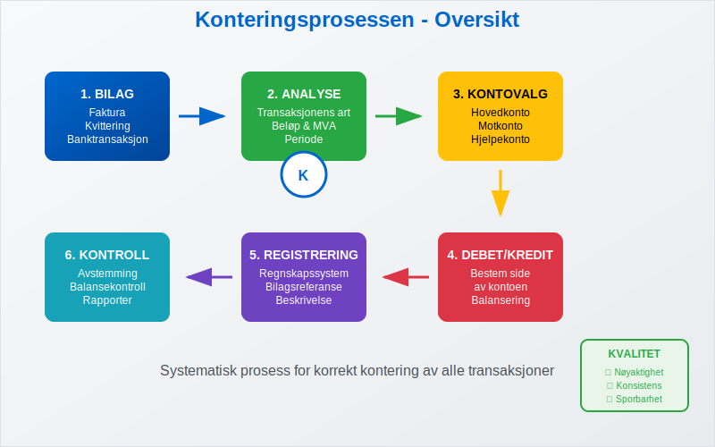
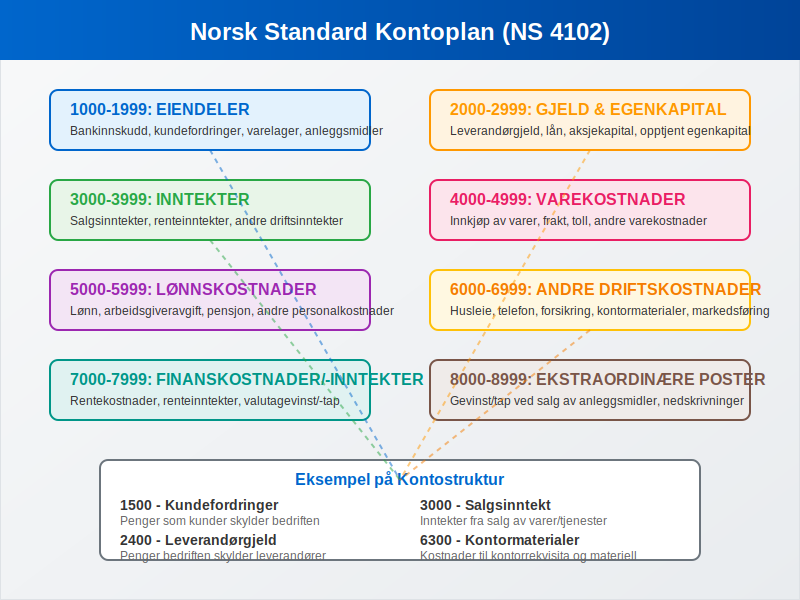
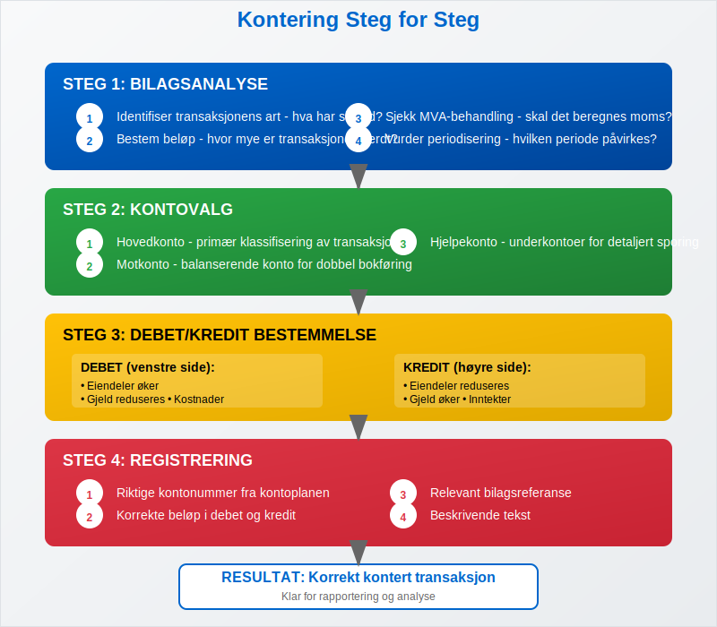
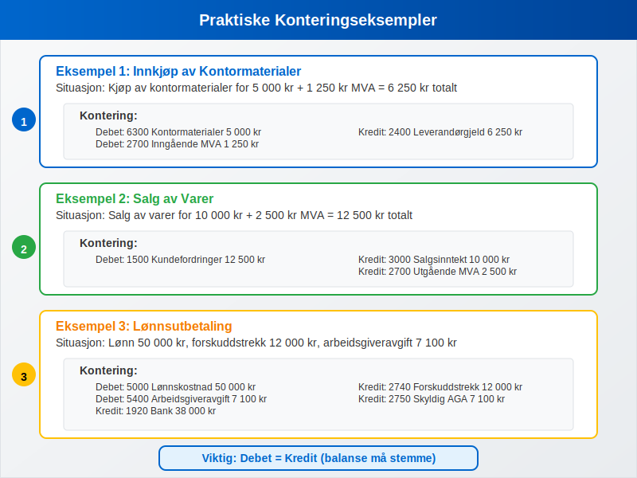
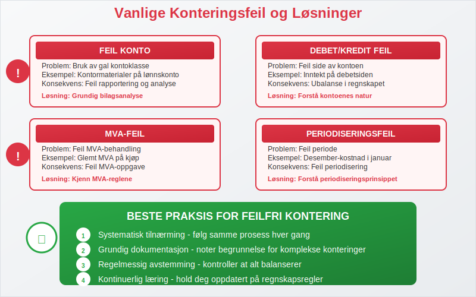
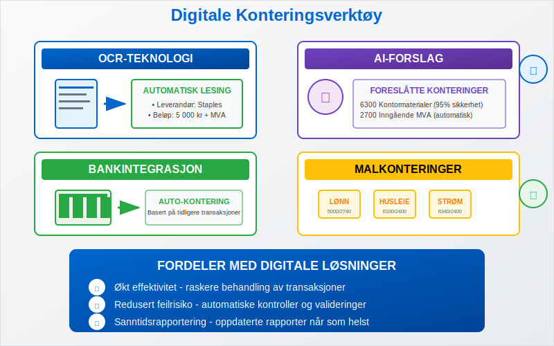
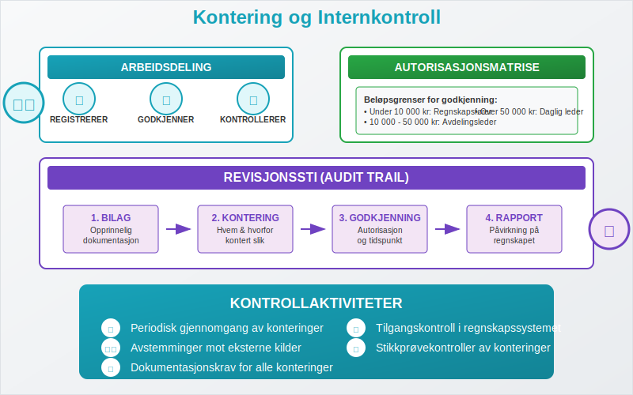
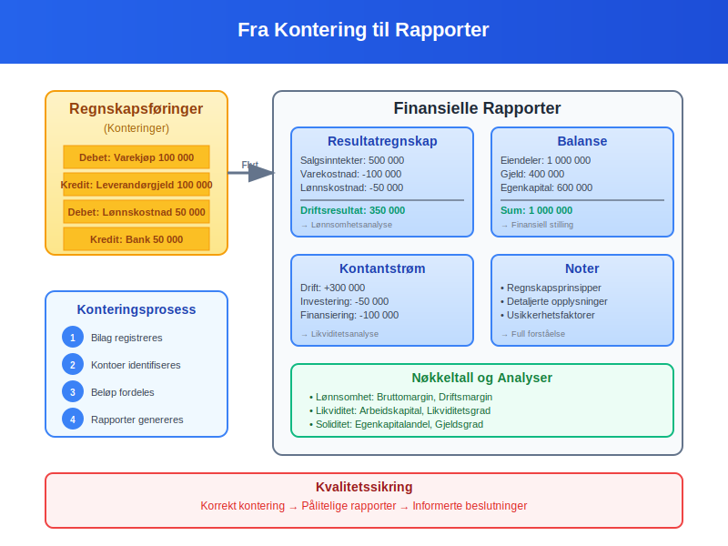
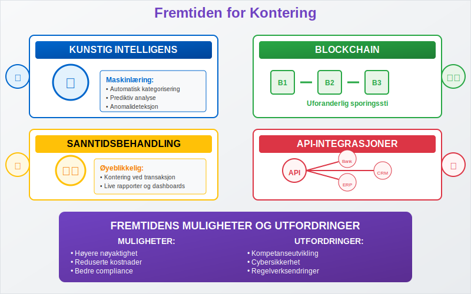

Kontering er prosessen med å tildele riktige kontonummer til bilag og transaksjoner i bokføringen. Dette er en fundamental del av regnskapet som sikrer at alle forretningshendelser registreres på riktige kontoer i henhold til kontoplanen. Korrekt kontering er avgjørende for å produsere pålitelige finansielle rapporter og overholde bokføringsloven.
Hva Betyr Kontering?
Kontering kommer fra det tyske ordet “Konto” og refererer til den systematiske prosessen med å klassifisere og kode finansielle transaksjoner. Hver transaksjon må konters - det vil si tildeles riktige kontonummer basert på transaksjonens art og innhold.

Hovedformål med Kontering:
- Systematisk organisering: Sikrer at alle transaksjoner plasseres i riktige kategorier
- Sporbarhet: Gjør det mulig å følge transaksjoner fra bilag til finansielle rapporter
- Kontroll: Muliggjør effektiv internkontroll og revisjon
- Rapportering: Grunnlag for nøyaktige finansielle rapporter og analyser
- Compliance: Sikrer overholdelse av regnskapsstandarder og lovkrav
Kontoplanen - Grunnlaget for Kontering
Kontoplanen er det strukturerte systemet av kontonummer som danner grunnlaget for all kontering. I Norge følger de fleste bedrifter Norsk Standard kontoplan (NS 4102).

Norsk Standard Kontoplan - Hovedgrupper:
| Kontoklasse | Område | Eksempler |
|---|---|---|
| 1000-1999 | Eiendeler | Bankinnskudd, kundefordringer, varelager |
| 2000-2999 | Gjeld og Egenkapital | Leverandørgjeld, lån, aksjekapital |
| 3000-3999 | Inntekter | Salgsinntekter, renteinntekter |
| 4000-4999 | Varekostnader | Innkjøp av varer, frakt |
| 5000-5999 | Lønnskostnader | Lønn, arbeidsgiveravgift, pensjon |
| 6000-6999 | Andre driftskostnader | Husleie, telefon, forsikring |
| 7000-7999 | Finanskostnader og -inntekter | Rentekostnader, valutagevinst |
| 8000-8999 | Ekstraordinære poster | Gevinst/tap ved salg av anleggsmidler |
Konteringsprosessen Steg for Steg
Korrekt kontering følger en systematisk prosess som sikrer nøyaktighet og konsistens.

1. Bilagsanalyse
Første steg er å analysere bilaget grundig:
- Identifiser transaksjonens art: Hva slags forretningshendelse har skjedd?
- Bestem beløp: Hvor mye er transaksjonen verdt?
- Sjekk MVA-behandling: Skal det beregnes merverdiavgift?
- Vurder periodisering: Hvilken periode skal transaksjonen påvirke?
2. Kontovalg
Velg riktige kontoer basert på transaksjonens innhold:
- Hovedkonto: Primær klassifisering av transaksjonen
- Motkonto: Balanserende konto for dobbel bokføring
- Hjelpekonto: Eventuelle underkontoer for detaljert sporing
3. Debet/Kredit Bestemmelse
Bestem om kontoene skal debiteres eller krediteres:
- Eiendeler øker: Debet
- Eiendeler reduseres: Kredit
- Gjeld øker: Kredit
- Gjeld reduseres: Debet
- Inntekter: Kredit
- Kostnader: Debet
4. Registrering
Registrer transaksjonen i regnskapssystemet med:
- Riktige kontonummer
- Korrekte beløp
- Relevant bilagsreferanse
- Beskrivende tekst
Praktiske Konteringseksempler
La oss se på konkrete eksempler på hvordan ulike transaksjoner konteres i praksis.

Eksempel 1: Innkjøp av Kontormaterialer
Situasjon: Bedriften kjøper kontormaterialer for 5 000 kr + 1 250 kr MVA = 6 250 kr totalt.
Kontering:
Debet: 6300 Kontormaterialer 5 000 kr
Debet: 2700 Inngående MVA 1 250 kr
Kredit: 2400 Leverandørgjeld 6 250 kr
Eksempel 2: Salg av Varer
Situasjon: Salg av varer for 10 000 kr + 2 500 kr MVA = 12 500 kr.
Kontering:
Debet: 1500 Kundefordringer 12 500 kr
Kredit: 3000 Salgsinntekt 10 000 kr
Kredit: 2700 Utgående MVA 2 500 kr
Eksempel 3: Lønnsutbetaling
Situasjon: Utbetaling av lønn 50 000 kr, forskuddstrekk 12 000 kr, arbeidsgiveravgift 7 100 kr.
Kontering:
Debet: 5000 Lønnskostnad 50 000 kr
Debet: 5400 Arbeidsgiveravgift 7 100 kr
Kredit: 1920 Bank 38 000 kr
Kredit: 2740 Forskuddstrekk 12 000 kr
Kredit: 2750 Skyldig arbeidsgiveravgift 7 100 kr
Vanlige Konteringsfeil og Hvordan Unngå Dem
Selv erfarne regnskapsførere kan gjøre konteringsfeil. Her er de vanligste feilene og hvordan du unngår dem.

Hyppige Konteringsfeil:
| Feiltype | Beskrivelse | Konsekvens | Forebygging |
|---|---|---|---|
| Feil konto | Bruk av gal kontoklasse | Feil rapportering | Grundig bilagsanalyse |
| Debet/Kredit feil | Feil side av kontoen | Ubalanse i regnskapet | Forstå kontoenes natur |
| MVA-feil | Feil MVA-behandling | Feil MVA-oppgave | Kjenn MVA-reglene |
| Periodiseringsfeil | Feil periode | Feil periodisering | Forstå periodiseringsprinsippet |
| Beløpsfeil | Feil beløp registrert | Feil balanse | Dobbeltsjekk alle beløp |
Beste Praksis for Feilfri Kontering:
- Systematisk tilnærming: Følg samme prosess hver gang
- Grundig dokumentasjon: Noter begrunnelse for komplekse konteringer
- Regelmessig avstemming: Kontroller at alt balanserer
- Kontinuerlig læring: Hold deg oppdatert på regnskapsregler
- Bruk av kontrollrutiner: Implementer kontroller i prosessen
Digitale Verktøy for Kontering
Moderne regnskapssystemer tilbyr avanserte funksjoner som forenkler konteringsprosessen betydelig.

Automatiserte Konteringsfunksjoner:
- Konteringsregler: Automatisk forslag basert på leverandør eller transaksjonsmønster
- OCR-teknologi: Automatisk lesing av fakturaer og forslag til kontering
- Bankintegrasjon: Automatisk import og forslag til kontering av banktransaksjoner
- Malkonteringer: Forhåndsdefinerte konteringsmønstre for gjentakende transaksjoner
- Validering: Automatisk kontroll av at konteringer balanserer
Fordeler med Digitale Løsninger:
- Økt effektivitet: Raskere behandling av transaksjoner
- Redusert feilrisiko: Automatiske kontroller og valideringer
- Bedre sporbarhet: Digital sporingssti fra bilag til rapport
- Integrerte arbeidsflyter: Sømløs overgang mellom prosesser
- Sanntidsrapportering: Oppdaterte rapporter når som helst
Kontering og Internkontroll
Korrekt kontering er en viktig del av bedriftens internkontroll og bidrar til å forebygge feil og misligheter.

Kontrollmekanismer:
- Arbeidsdeling: Skille mellom registrering og godkjenning
- Autorisasjonsmatrise: Klare fullmakter for ulike transaksjonstyper
- Periodisk gjennomgang: Regelmessig kontroll av konteringer
- Avstemminger: Kontroll mot eksterne kilder
- Dokumentasjonskrav: Krav til bilag og begrunnelser
Revisjonssti (Audit Trail):
En god konteringspraksis sikrer en klar revisjonssti som viser:
- Opprinnelig bilag: Hvor transaksjonen kommer fra
- Konteringsbeslutning: Hvem som konterte og hvorfor
- Godkjenning: Hvem som godkjente konteringen
- Registrering: Når og hvor transaksjonen ble registrert
- Rapportering: Hvordan transaksjonen påvirker rapportene
Kontering i Ulike Bransjer
Konteringspraksis kan variere mellom bransjer basert på spesifikke behov og reguleringer.
Handelsbedrifter
Fokusområder:
- Detaljert varekostnadssporing
- Lagerregistrering
- Kundefordringshåndtering
- Rabatter og returvarer
Tjenestebedrifter
Fokusområder:
- Prosjektbasert kontering
- Timeregistrering og fakturering
- Immaterielle eiendeler
- Kundekontrakter
Produksjonsbedrifter
Fokusområder:
- Produksjonskostnadssporing
- Work-in-progress registrering
- Råmaterialer og ferdigvarer
- Indirekte produksjonskostnader
Kontering og Rapportering
Korrekt kontering er grunnlaget for pålitelig finansiell rapportering og analyse.

Påvirkning på Finansielle Rapporter:
| Rapport | Påvirkning av Kontering | Viktighet |
|---|---|---|
| Resultatregnskap | Inntekter og kostnader | Kritisk for lønnsomhetsanalyse |
| Balanse | Eiendeler, gjeld, egenkapital | Grunnlag for finansiell stilling |
| Kontantstrømoppstilling | Klassifisering av kontantstrømmer | Viktig for likviditetsanalyse |
| Noter | Detaljert informasjon | Nødvendig for full forståelse |
Nøkkeltall og Analyser:
Korrekt kontering muliggjør beregning av viktige nøkkeltall som:
- Lønnsomhetsanalyse: Bruttomargin, driftsmargin
- Likviditetsanalyse: Arbeidskapital, likviditetsgrad
- Soliditetsanalyse: Egenkapitalandel, gjeldsgrad
- Effektivitetsanalyse: Omløpshastighet, kapitalbinding
Fremtiden for Kontering
Teknologisk utvikling endrer hvordan kontering utføres, med økt automatisering og kunstig intelligens.

Teknologiske Trender:
- Kunstig intelligens: Automatisk kategorisering basert på maskinlæring
- Blockchain: Uforanderlig sporingssti for transaksjoner
- API-integrasjoner: Sømløs dataflyt mellom systemer
- Sanntidsbehandling: Øyeblikkelig kontering og rapportering
- Prediktiv analyse: Forslag basert på historiske mønstre
Utfordringer og Muligheter:
- Kompetanseutvikling: Behov for nye ferdigheter
- Kvalitetssikring: Sikre nøyaktighet i automatiserte prosesser
- Regelverksendringer: Tilpasning til nye krav
- Cybersikkerhet: Beskytte sensitive finansielle data
Opplæring og Kompetansebygging
Effektiv kontering krever kontinuerlig læring og kompetansebygging.
Grunnleggende Ferdigheter:
- Regnskapsteori: Forståelse av grunnleggende prinsipper
- Kontoplankunnskap: Kjennskap til kontostruktur
- Systemkunnskap: Beherskelse av regnskapssystemer
- Analytiske ferdigheter: Evne til å analysere transaksjoner
- Detaljorientering: Nøyaktighet i registrering
Videreutdanning:
- Sertifiseringskurs: Spesialiserte kurs i kontering
- Bransjespesifikk opplæring: Tilpasset ulike bransjer
- Teknologioppdatering: Læring av nye verktøy
- Regelverksoppdatering: Følge med på endringer
Sammenheng med Andre Regnskapsbegreper
Kontering er tett knyttet til mange andre viktige regnskapsbegreper og prosesser.
Relaterte Begreper:
- Bilagsføring: Grunnlaget for kontering
- Avstemming: Kontroll av konteringer
- Periodisering: Riktig tidsperiode for kontering
- Dokumentasjon: Støtte for konteringsbeslutninger
Kontering er fundamentet som hele regnskapet bygger på. Ved å mestre denne prosessen sikrer du at bedriftens finansielle informasjon er nøyaktig, pålitelig og i samsvar med gjeldende regnskapsregler og -standarder.